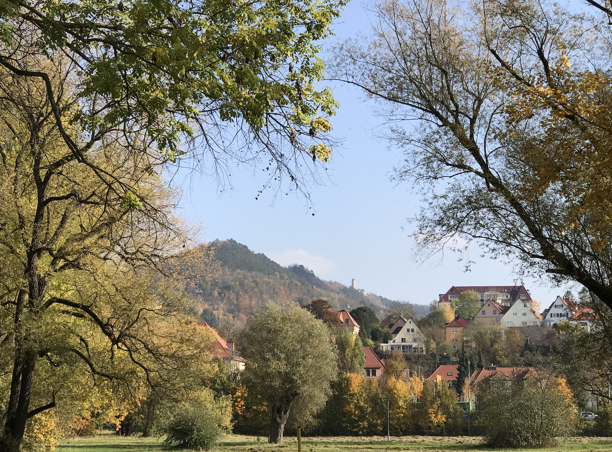

Quantum and a Grain of Mustard Seed 量子與芥菜種
Posted on 17 January, 2026
耶穌說：「是因你們的信心小。我實在告訴你們，你們若有信心，像一粒芥菜種，就是對這座山說：你從這邊挪到那邊。他也必挪去。」（馬太17:20）
He (Jesus) said to them, “Because of your little faith.
For truly, I say to you, if you have faith like a grain of mustard seed, you will say to this mountain, ‘Move from here to there,’ and it will move, and nothing will be impossible for you.” (Matthew 17:20)
如果有人告訴你，一顆微小的芥菜種能移動一座山，你大概會遲疑；但如果那顆「種子」是一個量子，那你又會怎麼想呢？ 在1911年的索爾維會議上，愛因斯坦與波耳站在一個物理和信仰的分岔路口。 愛因斯坦無法接受一個靠機率運作的世界，認為「上帝不會擲骰子」。（雖然他本人是不可知論者） 波耳則選擇擁抱不確定，否認一切必然的安排。 當人類還不完全理解時，量子物理早已滲入人類的生活中。
因著一個名為「量力而為」的量子展覽，我來到台中科博館。 那些原本只存在於課本與深奧物理文獻中的名詞，被轉化成直覺而溫柔的語言，像是在對日常生活悄悄說話。 展覽提到量子疊加態與量子位元：微觀世界中的粒子同時蘊含多種可能的狀態。 量子電腦利用的是讓粒子的多種狀態彼此干涉，使某些結果逐漸被強化。觀測的那一刻，並非從眾多答案中挑選，而是讓潛藏的機率輪廓顯現。 人生似乎也是如此。在面臨人生關卡時，我們或許也不必急於找最佳解，可以允許多種可能暫時共存。 隨著我們的選擇與經驗交會，原本模糊的道路便會慢慢變得清晰，而那可能才是最適合我們的方向。
測不準原理則提醒我們，粒子的位置與動量無法同時被精確掌握，看似限制，卻也成為量子感測器的基礎，讓人類能偵測地球重力極細微的變化，甚至用於火山活動與地殼運動的觀測。 原放到生活裡，或許也是如此。 當我們無法掌控所有細節，並不意味著失控，而是為意想不到的結果預留了空間。
而量子糾纏更讓我感到一種奇妙的溫柔。 當兩個粒子在量子過程中產生關聯，即使被分隔到極遠的距離，它們的狀態仍然彼此呼應。 這不禁讓人聯想到人與人之間的連結。有些關係一旦建立，便超越了空間與時間的限制，即使不常聯絡，也仍在心裡某個層面彼此牽動，像是無形卻真實存在的牽繫。
至於量子穿隧效應，則是最富希望的一個比喻。 粒子在極低的機率下，仍有可能穿越原本不該通過的障礙。這讓我想到生命中那些看似不可能的事，也許成功的機率很小，但並非為零。 正如耶穌在《馬太福音》17:20 所說的。不是因為我們有多大的力量，而是因為信心而能突破限制的可能。
「量力而為」並不只是告訴我們要認清自己的界線，也提醒了我們要接受那不確定性、接納多種可能，並學會如何珍惜彼此之間的連結。 憑著信心我們或許無法移動真正的山，但可以在生活中找到突破困境的可能。

If someone told you that a tiny mustard seed could move a mountain, you might hesitate. But what if that “seed” were a quantum? At the 1911 Solvay Conference, Einstein and Bohr stood at a crossroads of physics and belief. Einstein could not accept a world governed by probability, insisting that “God does not play dice” (though he himself was an agnostic). Bohr, by contrast, chose to embrace uncertainty, rejecting any notion of predetermined order. Even before humans fully understand it, quantum physics has already permeated human life.
Drawn by a quantum exhibition titled “Exploring Tiny Wonders - A Journey into Quantum Science,” I found myself at the National Museum of Natural Science in Taichung. Terms that once lived only in textbooks and dense physics literature were transformed into language both intuitive and gentle, as though quietly speaking to everyday life. The exhibition introduced quantum superposition and qubits: in the microscopic world, particles embody multiple possible states at once. Quantum computers harness this by allowing these states to interfere with one another, gradually amplifying certain outcomes. The moment of observation is not a matter of selecting from many answers, but of revealing the underlying contours of probability. Life, perhaps, is not so different. When facing crossroads, we may not need to rush toward an optimal solution. We can allow multiple possibilities to coexist for a time. As our choices and experiences intersect, the once-blurred path slowly comes into focus, and that may be the direction most suited to us.
The uncertainty principle reminds us that a particle’s position and momentum cannot be precisely determined at the same time. What appears to be a limitation, however, has become the foundation of quantum sensors, enabling us to detect the subtlest variations in Earth’s gravity, even contributing to the observation of volcanic activity and movements of the crust. Perhaps the same holds true in life. When we cannot control every detail, it does not necessarily signify chaos, but rather leaves room for outcomes we could not have foreseen.
Quantum entanglement, meanwhile, evokes in me a peculiar sense of tenderness. When two particles become correlated through a quantum process, their states continue to resonate with one another, even when separated by vast distances. It inevitably calls to mind the connections between people. Some relationships, once formed, seem to transcend the limits of space and time. Even without frequent contact, there remains a subtle sense of mutual presence, an invisible yet unmistakably real bond.
As for quantum tunneling, it strikes me as the most hopeful metaphor of all. Even with an exceedingly small probability, a particle may still pass through a barrier it seemingly should not be able to cross. It reminds me of those moments in life that appear impossible. The chances of success may be slim, yet they are not zero. As Jesus says in Matthew 17:20, it is not the magnitude of our strength, but the presence of faith, that opens the possibility of surpassing limitations.
The exhibition is not merely about quantum physics. It also reminds us to embrace uncertainty, to accept the coexistence of possibilities, and to learn to cherish the connections we share with others. With faith, we may not move literal mountains, but we may yet discover the possibility of overcoming the obstacles in our lives.